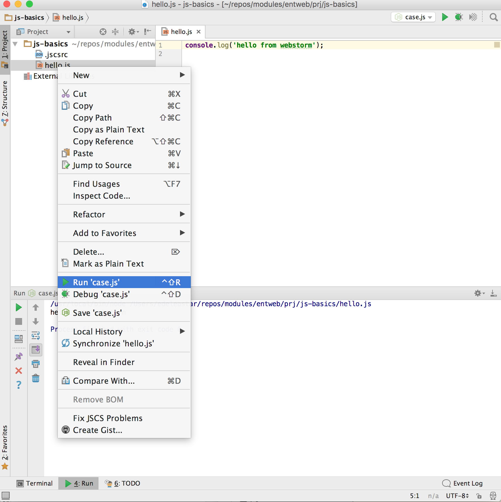

Examine some of JavaScript's constructs such as conditionals, loops, arrays, objects, functions and scope. Understanding some concepts such as Truthy and Falsy values. simple static web site, include an external JavaScript file and use Google Chrome developer tools to debug into the script at runtime.
For this lab, we will dispense with the need for html and a browser to run the code, and make use of webstorm (and node) to run the programmes.
Create a new empty project called js-basics. Follow the instructions on the first step of the last lab to configure the project with the same .jscsrc configuration as outlined there.
In the project, create a file called hello.js containing the following:
console.log('hello from webstorm');You can now run this script by selecting the file in the context menu, and selecting Run:

We should see the message in the lower run panel. We can use this technique to run all the scripts in this lab.
Sometimes a block of code should only be run under certain conditions. Flow control — via if and else blocks — lets you run code if certain conditions have been met.
// Control flow
const foo = true;
const bar = false;
if (bar) {
conole.log('this code won\'t run');
}
if (bar) {
conole.log('this code won\'t run');
} else {
if (foo) {
conole.log('this code will run');
} else {
conole.log('this code would run if foo and bar were both false');
}
}While curly braces aren't strictly required around single-line if statements, using them consistently, even when they aren't strictly required, makes for vastly more readable code.
Be mindful not to define functions with the same name multiple times within separate if/else blocks, as doing so may not have the expected result.
In order to use flow control successfully, it's important to understand which kinds of values are "truthy" and which kinds of values are "falsy." Sometimes, values that seem like they should evaluate one way actually evaluate another.
// Values that evaluate to true
'0';
'any string';
[]; // an empty array
{}; // an empty object
1; // any non-zero number// Values that evaluate to false
''; // an empty string
NaN; // JavaScript's "not-a-number" variable
null;
undefined; // be careful -- undefined can be redefined!Write a program in a file called if.js to do the following:
Change the values manually to generate each of the outputs in turn.
Rather than using a series of if/else blocks, sometimes it can be useful to use a switch statement instead. Switch statements look at the value of a variable or expression, and run different blocks of code depending on the value.
// A switch statement
switch (foo) {
case 'bar':
alert('the value was bar -- yay!');
break;
case 'baz':
alert('boo baz :(');
break;
default:
alert('everything else is just ok');
}switch.jsWrite program in a file called switch.js containing a switch statement. The switch is to check a variable called grade for good, excellent and outstanding strings. If should log to the console a suitable congratulatory message depending on which string is present.
Run the program by declaring and initialising the grade variable.
Explore the ES6 string substitution in your solution:
Loops let a block of code run a certain number of times:
// A for loop
// logs `try 0`, `try 1`, ..., `try 4`
for (let i = 0; i < 5; i++) {
console.log(`try ` + i);
}Note that in loops, the variable i is not 'scoped' to the loop block even though the keyword let is used before the variable name.
for loopA for loop is made up of four statements and has the following structure:
for ([initialisation]; [conditional]; [iteration]) {
[loopBody]
}The initialisation statement is executed only once, before the loop starts. It gives you an opportunity to prepare or declare any variables.
The conditional statement is executed before each iteration, and its return value decides whether the loop is to continue. If the conditional statement evaluates to a falsey value, then the loop stops.
The iteration statement is executed at the end of each iteration and gives you an opportunity to change the state of important variables. Typically, this will involve incrementing or decrementing a counter and thus bringing the loop closer to its end.
The loopBody statement is what runs on every iteration. It can contain anything. Typically, there will be multiple statements that need to be executed, and should be wrapped in a block ({...}).
Here's a typical for loop:
// A typical for loop
for (let i = 0, limit = 100; i < limit; i++) {
// This block will be executed 100 times
console.log('Currently at ' + i);
// Note: the last log will be `Currently at 99`
}while loopA while loop is similar to an if statement, except that its body will keep executing until the condition evaluates to false.
while ([conditional]) {
[loopBody]
}Here's a typical while loop:
// A typical while loop
let i = 0;
while (i < 100) {
// This block will be executed 100 times
console.log(`Currently at ` + i);
// increment i
i++;
}Notice that the counter is incrementing within the loop's body. It's possible to combine the conditional and incrementer, like so:
// A while loop with a combined conditional and incrementer
let j = -1;
while (++j < 100) {
// This block will be executed 100 times
console.log(`Currently at ` + j);
}Notice that the counter starts at -1 and uses the prefix incrementer (++i).
do-while loopThis is almost exactly the same as the while loop, except for the fact that the loop's body is executed at least once before the condition is tested.
do {
[loopBody]
} while ([conditional])Here's a do-while loop:
// A do-while loop
do {
// Even though the condition evaluates to false
// this loop's body will still execute once.
console.log(`Hi there!`);
}
while (false);These types of loops are quite rare since only few situations require a loop that blindly executes at least once. Regardless, it's good to be aware of it.
Usually, a loop's termination will result from the conditional statement not evaluating to true, but it is possible to stop a loop in its tracks from within the loop's body with the break statement.
// Stopping a loop
for (let i = 0; i < 10; i++) {
if (i == 4) {
break;
}
}You may also want to continue the loop without executing more of the loop's body. This is done using the continue statement.
// Skipping to the next iteration of a loop
for (let i = 0; i < 10; i++) {
if (i == 5) {
continue;
}
// The following statement will only be executed
// if the conditional 'something' has not been met
console.log(`I have been reached`);
}In loop.js
Additionally, write code fragments to:
Arrays are zero-indexed, ordered lists of values. They are a handy way to store a set of related items of the same type (such as strings), though in reality, an array can include multiple types of items, including other arrays.
To create an array, either use the object constructor or the literal declaration, by assigning the variable a list of values after the declaration.
// A simple array with constructor
const myArray1 = new Array('hello', 'world');
// literal declaration, the preferred way
const myArray2 = ['hello', 'world'];The literal declaration is generally preferred. See the Google Coding Guidelines for more information.
If the values are unknown, it is also possible to declare an empty Array, and add elements either through functions or through accessing by index:
//Creating empty arrays and adding values
let myArray3 = [];
// adds 'hello' on index 0
myArray3.push('hello');
// adds 'world' on index 1
myArray3.push('world');
// adds '!' on index 2
myArray3[2] = '!';'push' is a function that adds an element on the end of the array and expands the array respectively. You also can directly add items by index. Missing indices will be filled with 'undefined'.
//Leaving indices
var myArray4 = [];
myArray4[0] = 'hello';
myArray4[1] = 'world';
myArray4[3] = '!';
console.log(myArray4); // [ 'hello', 'world', undefined, '!' ];If the size of the array is unknown, 'push' is far more safe. You can both access and assign values to array items with the index.
//Accessing array items by index
const myArray5 = ['hello', 'world', '!'];
console.log(myArray5[2]); // '!'In your current project create a file called 'arrays.js' in the js folder to do the following:
Observe the results in webstorm
.lengthThe .length property is used to determine the amount of items in an array.
const myArray6 = ['hello', 'world', '!'];
console.log(myArray6.length); // 3You will need the .length property for looping through an array:
// For loops and arrays - a classic
const myArray7 = ['hello', 'world', '!'];
for (let i = 0; i < myArray7.length; i = i + 1) {
console.log(myArray7[i]);
}Except when using for/in loops:
// For loops and arrays - alternate method
const myArray8 = ['hello', 'world', '!'];
for (let i in myArray8) {
console.log(myArray8[i]);
}.concatConcatenate two or more arrays with .concat:
//Concatenating Arrays
const myArray9 = [2, 3, 4];
const myArray10 = [5, 6, 7];
const myArray11 = myArray9.concat(myArray10);
console.log(myArray11); // [ 2, 3, 4, 5, 6, 7 ].join.join creates a string representation of the array. Its parameter is a string that works as a separator between elements (default separator is a comma):
//Joining elements
const myArray12 = ['hello', 'world', '!'];
console.log(myArray12.join(' ')); // 'hello world !';
console.log(myArray12.join()); // 'hello,world,!'
console.log(myArray12.join('')); // 'helloworld!'
console.log(myArray12.join('!!')); // 'hello!!world!!!';.pop.pop removes the last element of an array. It is the opposite method of .push:
//pushing and popping
let myArray13 = [];
myArray13.push(0); // [ 0 ]
myArray13.push(2); // [ 0 , 2 ]
myArray13.push(7); // [ 0 , 2 , 7 ]
myArray13.pop(); // [ 0 , 2 ].reverseAs the name suggests, the elements of the array are in reverse order after calling this method:
//reverse
const myArray14 = ['world', 'hello'];
// [ 'hello', 'world' ]
myArray14.reverse();
console.log(myArray14);.shiftRemoves the first element of an array. With .pop and .shift, you can recreate the method of a queue):
//queue with shift() and pop()
let myArray15 = [];
myArray15.push(0); // [ 0 ]
myArray15.push(2); // [ 0 , 2 ]
myArray15.push(7); // [ 0 , 2 , 7 ]
myArray15.shift(); // [ 2 , 7 ]
console.log(myArray15);.sliceExtracts a part of the array and returns that part in a new array. This method takes one parameter, which is the starting index:
//slicing
const myArray16 = [1, 2, 3, 4, 5, 6, 7, 8];
const myArray17 = myArray16.slice(3);
console.log(myArray17); // [ 1, 2, 3, 4, 5, 6, 7, 8 ]
console.log(myArray17); // [ 4, 5, 6, 7, 8 ].spliceRemoves a certain amount of elements and adds new ones at the given index. It takes at least 3 parameters:
// splice method
myArray.splice(index, length, values, ...);For example:
//splice example
const myArray18 = [0, 7, 8, 5];
myArray18.splice(1, 2, 1, 2, 3, 4);
console.log(myArray18); // [ 0, 1, 2, 3, 4, 5 ].sortSorts an array. It takes one parameter, which is a comparing function. If this function is not given, the array is sorted ascending:
//sorting without comparing function
const myArray19 = [3, 4, 6, 1];
myArray19.sort(); // 1, 3, 4, 6
console.log(myArray19); // 1, 3, 4, 6//sorting with comparing function
function descending(a, b) {
return b - a;
}
const myArray20 = [3, 4, 6, 1];
myArray20.sort(descending); // [ 6, 4, 3, 1 ]The return value of descending (for this example) is important. If the return value is less than zero, the index of a is before b, and if it is greater than zero it's vice-versa. If the return value is zero, the elements index is equal.
.unshiftInserts an element at the first position of the array:
//unshift
const myArray21 = [];
myArray21.unshift(0); // [ 0 ]
myArray21.unshift(2); // [ 2 , 0 ]
myArray21.unshift(7); // [ 7 , 2 , 0 ].forEachIn modern browsers it is possible to traverse through arrays with a .forEach method, where you pass a function that is called for each element in the array.
The function takes up to three arguments:
All of these are optional, but you will need at least the 'element' parameter in most cases.
//native forEach
function printElement(elem) {
console.log(elem);
}
function printElementAndIndex(elem, index) {
console.log('Index ' + index + ': ' + elem);
}
function negateElement(elem, index, array) {
array[index] = -elem;
}
myArray22 = [1, 2, 3, 4, 5];
// prints all elements to the console
myArray22.forEach(printElement);
// prints 'Index 0: 1' 'Index 1: 2' 'Index 2: 3' ...
myArray22.forEach(printElementAndIndex);
// myArray is now [ -1, -2, -3, -4, -5 ]
myArray22.forEach(negateElement);Take the last code fragment - foreach above, and incorporate into your arrays.js file. In webstorm, see if you can figure out how to debug and single step through the program.
Hints:
Objects contain one or more key-value pairs. The key portion can be any string. The value portion can be any type of value: a number, a string, an array, a function, or even another object. When one of these values is a function, it’s called a method of the object. Otherwise, they are called properties.
As it turns out, nearly everything in JavaScript is an object — arrays, functions, numbers, even strings — and they all have properties and methods.
// Creating an object literal
const myObject = {
sayHello: function () {
console.log('hello');
},
myName: 'Rebecca',
};
myObject.sayHello(); // "hello"
console.log(myObject.myName); // "Rebecca"When creating object literals, note that the key portion of each key-value pair can be written as any valid JavaScript identifier, a string (wrapped in quotes), or a number:
const someString = 'some string';
const myObject2 = {
validIdentifier: 123,
someString: 456,
99999: 789,
};
console.log(myObject2);Create a file called 'objects.js' your current project and bring in the first code fragment in this page and run it. Then do the following:
Using this code as a guide, create a new object call myLocation. It should have location-name, latitude, longitude and description as its fields. It should then have a method 'showLocation' to log the current location to the console.
Functions contain blocks of code that need to be executed repeatedly. Functions can take zero or more arguments, and can optionally return a value.
Functions can be created in a variety of ways, two of which are shown below:
Study Airbnb styleguide section on functions.
// Function Declaration
function foo1() {
/* do something */
}// Named Function Expression
const foo2 = function () {
/* do something */
};// A simple function
const greet1 = function (person, greeting) {
var text = greeting + ', ' + person;
console.log(text);
};
greet1('Rebecca', 'Hello');// A function that returns a value
const greet2 = function (person, greeting) {
var text = greeting + ', ' + person;
return text;
};
console.log(greet2('Rebecca', 'hello')); // 'hello, Rebecca'// A function that returns another function
const greet = function (person, greeting) {
var text = greeting + ', ' + person;
return function () {
console.log(text);
};
};
const greeting = greet('Rebecca', 'Hello');
greeting();Create a new javascript file called 'function.js' Incorporate this function here into it:
// A simple function
function greet(person, greeting) {
const text = greeting + ', ' + person;
console.log(text);
};
greet('Rebecca', 'Hello');Introduce new function call to greet other people - and make sure the console displays the greeting.
A common pattern in JavaScript is the immediately-invoked function expression. This pattern creates a function expression and then immediately executes the function. This pattern is extremely useful for cases where you want to avoid polluting the global namespace with code — no variables declared inside of the function are visible outside of it.
// An immediately-invoked function expression
(function () {
var foo = 'Hello world';
})();
console.log(foo); // undefined!In JavaScript, functions are 'first-class citizens' — they can be assigned to variables or passed to other functions as arguments. Passing functions as arguments is an extremely common idiom in jQuery.
// Passing an anonymous function as an argument
const myFn1 = function (fn) {
var result = fn();
console.log(result);
};
// logs 'hello world'
myFn1(function () {
return 'hello world';
});// Passing a named function as an argument
const myFn2 = function (fn) {
var result = fn();
console.log(result);
};
const myOtherFn = function () {
return 'hello world';
};
myFn2(myOtherFn); // 'hello world'"Scope" refers to the variables that are available to a piece of code at a given time. A lack of understanding of scope can lead to frustrating debugging experiences.
When a variable is declared inside of a function using the var keyword, it is only available to code inside of that function — code outside of that function cannot access the variable. On the other hand, functions defined inside that function will have access to to the declared variable.
When a var is declared and initialized within a function, the declaration is silently hoisted to the top of the function but not the assignment. The variable has what is termed function scope. This contrasts to block scope with which we are familiar from Java.
Study the section on Hoisting in the Airbnb style guide.
Prior to ES6 JavaScript possessed function scope (and global scope). This still applies to var type for the purpose of backward compatibility. But two new variable types have been introduced in ES6, const and let, and these have block scope.
Furthermore, variables that are declared inside a function without the var, const or letkeyword are not local to the function — JavaScript will traverse the scope chain all the way up to the window scope to find where the variable was previously defined. If the variable wasn't previously defined, it will be defined in the global scope which can have unexpected adverse consequences.
Whereas it is important for the purpose of code maintenance to recognize and understand the behaviour of the var type, its future use is discouraged. Instead, one should use const and let. Use const where reassignment is not envisaged, otherwise use let.
The first block of code below demonstrates the difference between function scope and block scope:
/**
* The variables a and b have block scope and are 'visible'
* only within the if (flag) {...} block.
* The variable c has function scope and is 'visible' within the entire
* function myFunction block, including within the nested if block.
*/
function myFunction(flag) {
if (flag) {
const a = 1; // The scope is inside the if-block
let b = 2; // The scope is inside the if-block
var c = 3; // The scope is inside the function
// Both a and b in scope
console.log(a); // 1
console.log(b); // 2
console.log(c); // 3
}
// Only b is in scope here.
console.log(a); // Uncaught ReferenceError because a has block scope
console.log(b); // Uncaught ReferenceError because b has block scope
console.log(c); // 3 Because b has function scope
}
myFunction(true);// Functions have access to variables defined in the same scope
const foo = 'hello';
function sayHello() {
console.log(foo);
};
sayHello(); // 'hello'
console.log(foo); // 'hello'/**
* Code outside the scope in which a variable was defined does not have access
* to the variable
*/
function sayHello() {
const foo = 'hello';
console.log(foo);
};
sayHello(); // hello/**
* Variables with the same name can exist in different scopes
* with different values
*/
const foo2 = 'world';
function sayHello() {
const foo2 = 'hello';
console.log(foo2);
};
sayHello(); // logs 'hello'
console.log(foo2); // logs 'world'
// Functions can see changes in variable values after the function is defined
function myFunction() {
let foo2 = 'hello';
function myFn() {
console.log(foo2);
};
foo2 = 'world';
return myFn;
};
const f = myFunction();
f(); // 'world'#
/**
* Scope insanity
* Immediately invoked function expression (IIFE)
* a self-executing anonymous function
*/
(function () {
var baz = 100;
var bim = function () {
console.log(baz);
};
bar = function () {
console.log(baz);
};
}());
/**
* The function bar() is defined outside of the anonymous function
* because it wasn't declared with var and is therefore an implied global.
* This is not recommended practice: adding to the global namespace.
* And bar() has access to baz because outer function variables (and parameters) are available
* to inner functions: this is referred to as closure.
*/
bar(); // => 100Attempting to access baz outside the IIFE above will fail:
(function () {
...
...
}());
/**
* var baz has function scope and is not visible outside the IIFE.
* Therefore attemting to access it here will generate an error:
* Uncaught ReferenceError: baz is not defined
*/
console.log(baz);The function bim() is also undefined outside the IIFE and so attempted invocation will fail.
(function () {
...
...
}());
/**
* bim() is not defined outside of the anonymous function,
* An attempt to invoke it will fail with this error:
* Uncaught ReferenceError: baz is not defined
*/
bim();All of the above behaviour applies in non-strict mode. Where ES6 strict mode is applied, the IIFE above will fail, generating an error warning that bar is not defined. That is, bar may no longer be defined as an implied global variable - which can only be good.
Take the each of the above code fragements separately,
Archive of the project so far:
Download and make sure you can open this project in WebStorm successfully. Verify that the Jscsrc guidelines are all showing green. Deliberately introduce some style violations, and get used to the error reports from the style plugin.
Experiment with the debugger in WebStorm